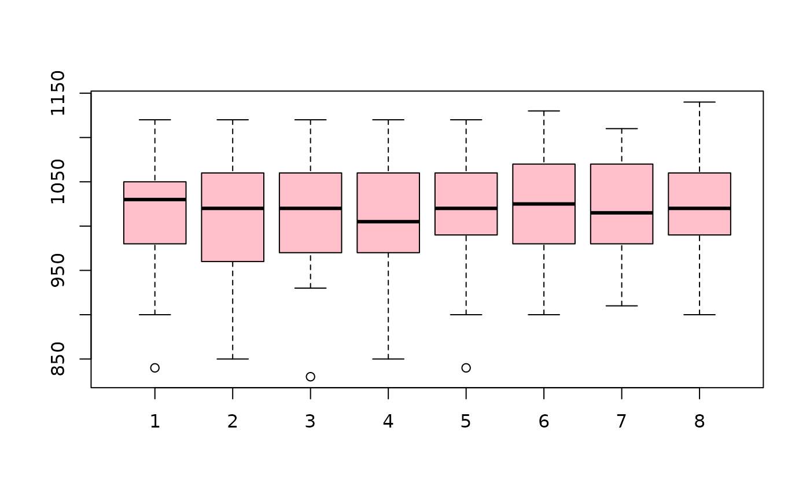

R/BSDA-package.R
Chips.RdData for Exercise 10.9
Chips
A data frame/tibble with 30 observations on eight variables
first measurement of thickness of the oxide layer for wafer1
second measurement of thickness of the oxide layer for wafer1
third measurement of thickness of the oxide layer for wafer1
fourth measurement of thickness of the oxide layer for wafer1
first measurement of thickness of the oxide layer for wafer2
second measurement of thickness of the oxide layer for wafer2
third measurement of thickness of the oxide layer for wafer2
fourth measurement of thickness of the oxide layer for wafer2
Yashchin, E. 1995. “Likelihood Ratio Methods for Monitoring Parameters of a Nested Random Effect Model.” Journal of the American Statistical Association, 90, 729-738.
Kitchens, L. J. (2003) Basic Statistics and Data Analysis. Pacific Grove, CA: Brooks/Cole, a division of Thomson Learning.
with(data = Chips, boxplot(wafer11, wafer12, wafer13, wafer14, wafer21, wafer22, wafer23, wafer24, col = "pink") )